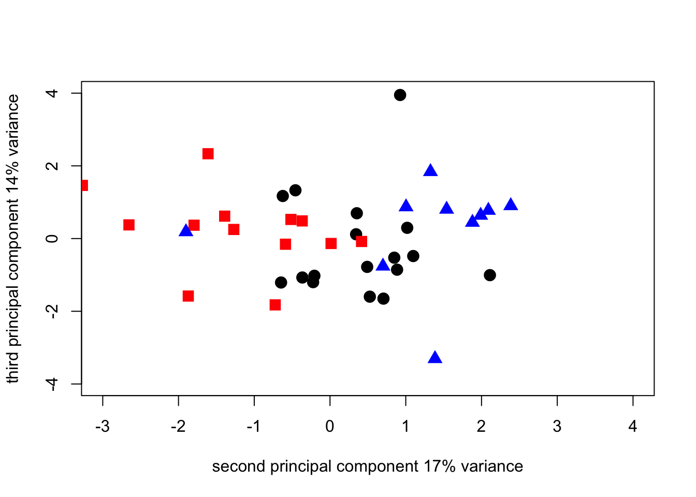
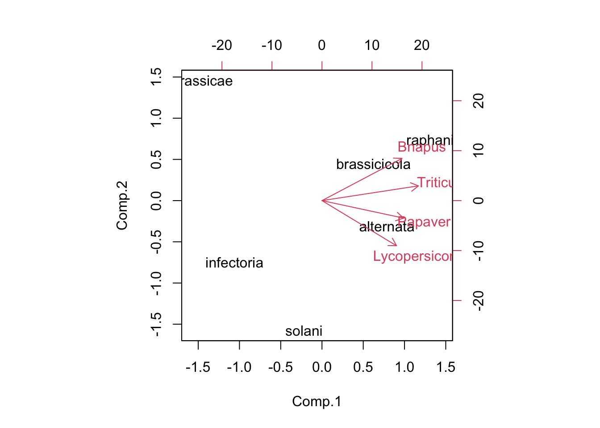

The data are from a survey of pests and diseases in winter wheat crops in Scotland during the 1990’s. In this case there are data for 41 fields spread over 3 regions and for 15 disease variables in each field. The data file for this section of the workshop is PCA1_Survey.csv.
The following code lets you load the data, generates the PCA and produces some output to examine the results of the PCA.
PCA1_data <- read.csv("data/PCA1_Survey.csv", head = TRUE)
head(PCA1_data)survey_pca1 <- princomp(PCA1_data[3:17])
summary_pca1 <- summary(survey_pca1)
summary_pca1## Importance of components:
## Comp.1 Comp.2 Comp.3 Comp.4
## Standard deviation 9.140000 7.0822555 3.70328360 2.03527024
## Proportion of Variance 0.538989 0.3236165 0.08848332 0.02672586
## Cumulative Proportion 0.538989 0.8626054 0.95108877 0.97781462
## Comp.5 Comp.6 Comp.7 Comp.8
## Standard deviation 1.076954292 0.964126883 0.809473804 0.617138237
## Proportion of Variance 0.007483108 0.005997301 0.004227592 0.002457267
## Cumulative Proportion 0.985297731 0.991295032 0.995522624 0.997979891
## Comp.9 Comp.10 Comp.11 Comp.12
## Standard deviation 0.3909325619 0.2885552177 0.2245169033 0.163103845
## Proportion of Variance 0.0009860323 0.0005372115 0.0003252262 0.000171639
## Cumulative Proportion 0.9989659233 0.9995031348 0.9998283610 1.000000000
## Comp.13 Comp.14 Comp.15
## Standard deviation 4.049968e-08 9.530711e-09 0
## Proportion of Variance 1.058256e-17 5.860546e-19 0
## Cumulative Proportion 1.000000e+00 1.000000e+00 1loadings_pca1 <- survey_pca1$loadings
loadings_pca1##
## Loadings:
## Comp.1 Comp.2 Comp.3 Comp.4 Comp.5 Comp.6 Comp.7 Comp.8 Comp.9
## ST_L 0.882 -0.431
## St_G 0.318 -0.389 0.205 0.616 0.518 0.231
## Sn_L 0.782 0.372 0.369 0.183
## Sn_G 0.117 -0.175 0.375 -0.170
## Yr_L
## Yr_G
## Br_L
## Pm_L -0.156 -0.170 0.619 -0.234 -0.100 0.220
## Pm_G -0.136 -0.310 0.499 -0.209 -0.157 0.140
## Fu_L -0.111 0.321 0.196 -0.860
## Bo_L 0.113 -0.199
## SM_E 0.242 0.284 0.279 0.544 -0.604 -0.186
## ES -0.959 0.255 0.105
## SES -0.260 -0.962
## TA 0.987
## Comp.10 Comp.11 Comp.12 Comp.13 Comp.14 Comp.15
## ST_L 0.117
## St_G
## Sn_L 0.220 0.105 -0.132
## Sn_G -0.659 -0.592
## Yr_L -0.959 0.282
## Yr_G -0.216 -0.697 -0.683
## Br_L -0.182 -0.659 0.730
## Pm_L -0.293 0.286 0.531
## Pm_G 0.139 -0.303 -0.661
## Fu_L 0.297 0.117
## Bo_L -0.492 0.666 -0.493
## SM_E -0.256 -0.132
## ES
## SES
## TA
##
## Comp.1 Comp.2 Comp.3 Comp.4 Comp.5 Comp.6 Comp.7 Comp.8
## SS loadings 1.000 1.000 1.000 1.000 1.000 1.000 1.000 1.000
## Proportion Var 0.067 0.067 0.067 0.067 0.067 0.067 0.067 0.067
## Cumulative Var 0.067 0.133 0.200 0.267 0.333 0.400 0.467 0.533
## Comp.9 Comp.10 Comp.11 Comp.12 Comp.13 Comp.14 Comp.15
## SS loadings 1.000 1.000 1.000 1.000 1.000 1.000 1.000
## Proportion Var 0.067 0.067 0.067 0.067 0.067 0.067 0.067
## Cumulative Var 0.600 0.667 0.733 0.800 0.867 0.933 1.000The summary() shows how the variance in the original data is distributed among the new components, while the loadings() show how the original variables contribute to the new components. One of the main ways to interpret the components is to plot the scores for the objects and then use any patterns that are apparent as a way to identify what information (in the informal sense) the new components contain. The following block of code generates various graphs based on the scores for the objects.
pca1_plot2_1 <- plot(survey_pca1$scores[, 1], survey_pca1$scores[, 2],
cex = 1.5,
xlab = "first principal component 54% variance",
ylab = "second principal component 32% variance"
)pca1_plot3_2 <- plot(survey_pca1$scores[, 2], survey_pca1$scores[, 3],
cex = 1.5,
xlab = "second principal component 32% variance",
ylab = "third principal component 9% variance"
)pca1_plot2_1 <- plot(survey_pca1$scores[, 1], survey_pca1$scores[, 3],
cex = 1.5,
xlab = "first principal component 54% variance",
ylab = "third principal component 9% variance"
)pca1_plot2_1N <- plot(survey_pca1$scores[1:17, 1], survey_pca1$scores[1:17, 2],
cex = 1.5, pch = 19,
xlab = "first principal component 54% variance",
ylab = "second principal component 32% variance",
xlim = c(-25, 10), ylim = c(-15, 15)
)
points(survey_pca1$scores[18:31, 1], survey_pca1$scores[18:31, 2], cex = 1.5, pch = 15, col = "red")
points(survey_pca1$scores[32:41, 1], survey_pca1$scores[32:41, 2], cex = 1.5, pch = 17, col = "blue")pca1_plot2_1N <- plot(survey_pca1$scores[1:17, 2], survey_pca1$scores[1:17, 3],
cex = 1.5, pch = 19,
xlab = "second principal component 32% variance",
ylab = "second principal component 9% variance",
xlim = c(-25, 10), ylim = c(-15, 15)
)
points(survey_pca1$scores[18:31, 2], survey_pca1$scores[18:31, 3], cex = 1.5, pch = 15, col = "red")
points(survey_pca1$scores[32:41, 2], survey_pca1$scores[32:41, 3], cex = 1.5, pch = 17, col = "blue")pca1_plot2_1N <- plot(survey_pca1$scores[1:17, 1], survey_pca1$scores[1:17, 3],
cex = 1.5, pch = 19,
xlab = "first principal component 54% variance",
ylab = "third principal component 9% variance",
xlim = c(-25, 10), ylim = c(-15, 15)
)
points(survey_pca1$scores[18:31, 1], survey_pca1$scores[18:31, 3], cex = 1.5, pch = 15, col = "red")
points(survey_pca1$scores[32:41, 1], survey_pca1$scores[32:41, 3], cex = 1.5, pch = 17, col = "blue")Since we can see from the loadings that the first 3 components a really only looking at diferences based on the soil-borne diseases, and since the 4th component is >0 let’s look at what we get by plotting 4 against 3. Note that we reduce the scale of the axes because these components have less variance so need a smaller absolute scale.
pca1_plot2_1N <- plot(survey_pca1$scores[1:17, 3], survey_pca1$scores[1:17, 4],
cex = 1.5, pch = 19,
xlab = "third principal component 9% variance",
ylab = "fourth principal component 3% variance",
xlim = c(-5, 10), ylim = c(-5, 10)
)
points(survey_pca1$scores[18:31, 3], survey_pca1$scores[18:31, 4], cex = 1.5, pch = 15, col = "red")
points(survey_pca1$scores[32:41, 3], survey_pca1$scores[32:41, 4], cex = 1.5, pch = 17, col = "blue")The plot shows that the fourth component is an east-west split (probably related to rainfall and cropping density in the rotation, the west being associated with wet weather diseases such as Septoria and ear blights and soil-borne diseases (eyespot and sharp eyespot being associated with the east where second wheat crops are not unusual and wheat is more frequent generally in the rotation.
With the results of the initial PCA in hand we can see it might be worth looking at an analysis of the correlation matrix of the data rather than the data matrix directly. This is an approach that can help in seeing the fine structure in a data set that might otherwise be obscured by differences in absolute magnitude among the variables. In this case the root diseases were scored on a pseudo-percentage scale from 0 to 100 while the foliar and head diseases were scored on a 0-9 categorical scale. There is an option in princomp() to switch to the correlation matrix, but we first have to dump the rust variables from the data because they are all 0 and the correlation method does not work with variables that have 0 variance.
The 3 rust variables are in columns 7,8 and 9 of the data frame. The following lines of code make a new data frame by dropping those columns from the original one and repeat the PCA on the correlation matrix. This time we can see that the variance is much more evenly spread over the components and the loadings show that the original variables contribute more equally to the components.
PCA1_cordata <- PCA1_data[c(-7, -8, -9)]
head(PCA1_cordata)survey_corpca1 <- princomp(PCA1_cordata[3:14], cor = TRUE)
summary_corpca1 <- summary(survey_corpca1)
summary_corpca1## Importance of components:
## Comp.1 Comp.2 Comp.3 Comp.4 Comp.5
## Standard deviation 1.7743038 1.4399475 1.2780887 1.1454076 1.05087820
## Proportion of Variance 0.2623462 0.1727874 0.1361259 0.1093299 0.09202875
## Cumulative Proportion 0.2623462 0.4351336 0.5712595 0.6805893 0.77261809
## Comp.6 Comp.7 Comp.8 Comp.9
## Standard deviation 0.98340581 0.80200920 0.63328449 0.56742763
## Proportion of Variance 0.08059058 0.05360156 0.03342077 0.02683118
## Cumulative Proportion 0.85320867 0.90681023 0.94023100 0.96706218
## Comp.10 Comp.11 Comp.12
## Standard deviation 0.43531982 0.38976123 0.232027303
## Proportion of Variance 0.01579195 0.01265948 0.004486389
## Cumulative Proportion 0.98285413 0.99551361 1.000000000corpca1_scree <- plot(survey_corpca1)loadings_corpca1 <- survey_corpca1$loadings
loadings_corpca1##
## Loadings:
## Comp.1 Comp.2 Comp.3 Comp.4 Comp.5 Comp.6 Comp.7 Comp.8 Comp.9
## ST_L -0.373 -0.316 0.100 -0.238 -0.165 0.192 0.243 0.545
## St_G -0.159 -0.533 0.214 -0.167 -0.153 0.166 -0.410 0.541
## Sn_L 0.402 -0.525 -0.311 -0.312 -0.245 0.138
## Sn_G -0.119 0.260 0.181 -0.564 0.480 0.161 -0.141 0.317
## Pm_L 0.378 0.116 0.513 0.124 0.265 0.145
## Pm_G 0.429 0.437 0.128 0.133 0.137 0.198 0.120
## Fu_L 0.292 -0.316 0.220 -0.400 0.187 -0.199 -0.439 -0.524
## Bo_L -0.429 0.314 0.272 0.155 0.136 0.112 -0.427
## SM_E -0.343 0.253 -0.599 -0.278
## ES -0.291 0.191 0.259 0.273 0.238 0.400 -0.532 -0.147 0.224
## SES 0.433 -0.330 0.471 0.567 -0.349
## TA 0.139 -0.191 -0.413 -0.303 0.607 -0.262 0.172 0.247
## Comp.10 Comp.11 Comp.12
## ST_L -0.288 0.410 0.151
## St_G 0.314
## Sn_L 0.403 0.298 -0.180
## Sn_G -0.367 -0.238
## Pm_L 0.212 -0.198 0.620
## Pm_G -0.138 -0.700
## Fu_L -0.135 0.193
## Bo_L 0.507 -0.316 -0.206
## SM_E -0.367 -0.476
## ES 0.406
## SES 0.143
## TA 0.196 -0.302 -0.123
##
## Comp.1 Comp.2 Comp.3 Comp.4 Comp.5 Comp.6 Comp.7 Comp.8
## SS loadings 1.000 1.000 1.000 1.000 1.000 1.000 1.000 1.000
## Proportion Var 0.083 0.083 0.083 0.083 0.083 0.083 0.083 0.083
## Cumulative Var 0.083 0.167 0.250 0.333 0.417 0.500 0.583 0.667
## Comp.9 Comp.10 Comp.11 Comp.12
## SS loadings 1.000 1.000 1.000 1.000
## Proportion Var 0.083 0.083 0.083 0.083
## Cumulative Var 0.750 0.833 0.917 1.000corpca1_plot2_1 <- plot(survey_corpca1$scores[, 1], survey_corpca1$scores[, 2],
cex = 1.5,
xlab = "first principal component 26% variance",
ylab = "second principal component 17% variance"
)corpca1_plot3_2 <- plot(survey_corpca1$scores[, 2], survey_corpca1$scores[, 3],
cex = 1.5,
xlab = "second principal component 17% variance",
ylab = "third principal component 14% variance"
)pca1_plot2_1N <- plot(survey_corpca1$scores[1:17, 1], survey_corpca1$scores[1:17, 2],
cex = 1.5, pch = 19,
xlab = "first principal component 26% variance",
ylab = "second principal component 17% variance",
xlim = c(-4, 6), ylim = c(-3, 4)
)
points(survey_corpca1$scores[18:31, 1], survey_corpca1$scores[18:31, 2], cex = 1.5, pch = 15, col = "red")
points(survey_corpca1$scores[32:41, 1], survey_corpca1$scores[32:41, 2], cex = 1.5, pch = 17, col = "blue")pca1_plot2_1N <- plot(survey_corpca1$scores[1:17, 2], survey_corpca1$scores[1:17, 3],
cex = 1.5, pch = 19,
xlab = "second principal component 17% variance",
ylab = "third principal component 14% variance",
xlim = c(-3, 4), ylim = c(-4, 4)
)
points(survey_corpca1$scores[18:31, 2], survey_corpca1$scores[18:31, 3], cex = 1.5, pch = 15, col = "red")
points(survey_corpca1$scores[32:41, 2], survey_corpca1$scores[32:41, 3], cex = 1.5, pch = 17, col = "blue")
By switching the components in the plot we can make the PCA output match the geographic orientation of the regions
pca1_plot2_1N <- plot(survey_corpca1$scores[1:17, 2], survey_corpca1$scores[1:17, 1],
cex = 1.5, pch = 19,
xlab = "second principal component 17% variance",
ylab = "first principal component 26% variance",
xlim = c(-3, 4), ylim = c(-4, 6)
)
points(survey_corpca1$scores[18:31, 2], survey_corpca1$scores[18:31, 1], cex = 1.5, pch = 15, col = "red")
points(survey_corpca1$scores[32:41, 2], survey_corpca1$scores[32:41, 1], cex = 1.5, pch = 17, col = "blue")As a final piece of analysis for this section we’ll introduce biplots. This will also serve as a link to the next section where we’ll look at biplots as a data inspection tool that can be helpful in interpreting two-factor ANOVA output. Both the scores for the objects and the loadings for the variables are related to the principal components. In 1971 Ruben Gabriel worked out an elegant way to how both the scores and the loadings on the same graph called a biplot. R includes a plot method that accepts a PCA structure as its input and produces a biplot automatically. One simple line of code is all that’s needed to make a biplot once you have a PCA object in R.
corpca1_bplot <- biplot(survey_corpca1, col = c("black", "blue"))Vectors which point in similar directions are positively correlated. Points which lie in a zone of the graph in the direction of a vector tend to have high values of the variable associated with the vector.
We often associate multivariate analyses with large data sets and think of them as techniques either to reduce the dimensionality of the data, or to show how objects of interest are related to each other overall given a large number of variables, or both. However, techniques such as PCA can be put to use in other contexts. One potentially useful application is to use the fact that a biplot is a representation of the variance-covariance structure in a set of data to use it to summarize the output from two-way ANOVAs.
There are a number of publications in the plant pathology literature where people have made use of this idea. The example here is from a paper on host and nonhost interactions between Alternaria anamorphs and a range of plant species by McRoberts & Lennard (1996) [Plant Pathology, 45 (4), 742-752]
We are going to use the biplot as a way of inspecting how the variance in a table of means from a two-factor ANOVA is distributed among the levels of the two factors. This gives us a nice visual tool for looking directly at interactions and seeing the difference between situations where the interaction is signficant and those where it’s not. The particular case we’ll look at comes from work on trying to establish where in the infection process host-specificity is decided for different Alternaria anamorphs during attempted infection on known hosts and non-hosts.
The first set of data is the percentage of germ-tubes of different Alternaria anamorphs which did NOT attempt penetration on different plant species.
The data are in file Alternaria_nopen.csv
Alt_nopen_data <- read.csv("data/Alternaria_nopen.csv", head = FALSE)
Altspp <- c("alternata", "brassicae", "brassicicola", "infectoria", "raphani", "solani")
host <- c("Bnapus", "Papaver", "Lycopersicon", "Triticum")
rownames(Alt_nopen_data) <- Altspp
colnames(Alt_nopen_data) <- host
Alt_pen_data <- 100 - Alt_nopen_data
Alt_pen_PCA <- princomp(Alt_pen_data, cor = FALSE)
summary(Alt_pen_PCA)## Importance of components:
## Comp.1 Comp.2 Comp.3 Comp.4
## Standard deviation 41.7719685 16.4955105 12.53752475 4.91088660
## Proportion of Variance 0.7937465 0.1237780 0.07150486 0.01097063
## Cumulative Proportion 0.7937465 0.9175245 0.98902937 1.00000000Alt_pen_bplt <- biplot(Alt_pen_PCA, pc.biplot = TRUE)
Now repeat the analysis with the data from Table 6 in M&L 1996. These data show the percentage of attempted penetration events that were successful.
The data are in Alternaria_pen_csv
Alt_infect_data <- read.csv("data/Alternaria_pen.csv", head = FALSE)
rownames(Alt_infect_data) <- Altspp
colnames(Alt_infect_data) <- host
Alt_infect_PCA <- princomp(Alt_infect_data, cor = FALSE)
summary(Alt_infect_PCA)## Importance of components:
## Comp.1 Comp.2 Comp.3 Comp.4
## Standard deviation 35.1072940 22.8488871 7.66055138 0
## Proportion of Variance 0.6797205 0.2879160 0.03236352 0
## Cumulative Proportion 0.6797205 0.9676365 1.00000000 1Alt_infect_bplt <- biplot(Alt_infect_PCA, pc.biplot = TRUE)## Warning in arrows(0, 0, y[, 1L] * 0.8, y[, 2L] * 0.8, col = col[2L], length
## = arrow.len): zero-length arrow is of indeterminate angle and so skippedAlt_pen_PCA$loadings##
## Loadings:
## Comp.1 Comp.2 Comp.3 Comp.4
## Bnapus -0.479 0.640 -0.559 0.219
## Papaver -0.489 -0.266 -0.202 -0.806
## Lycopersicon -0.446 -0.685 -0.190 0.544
## Triticum -0.577 0.224 0.781
##
## Comp.1 Comp.2 Comp.3 Comp.4
## SS loadings 1.00 1.00 1.00 1.00
## Proportion Var 0.25 0.25 0.25 0.25
## Cumulative Var 0.25 0.50 0.75 1.00Alt_infect_PCA$loadings##
## Loadings:
## Comp.1 Comp.2 Comp.3 Comp.4
## Bnapus 0.985 -0.154
## Papaver -0.134 0.923 -0.362
## Lycopersicon 0.112 0.377 0.920
## Triticum 1.000
##
## Comp.1 Comp.2 Comp.3 Comp.4
## SS loadings 1.00 1.00 1.00 1.00
## Proportion Var 0.25 0.25 0.25 0.25
## Cumulative Var 0.25 0.50 0.75 1.00